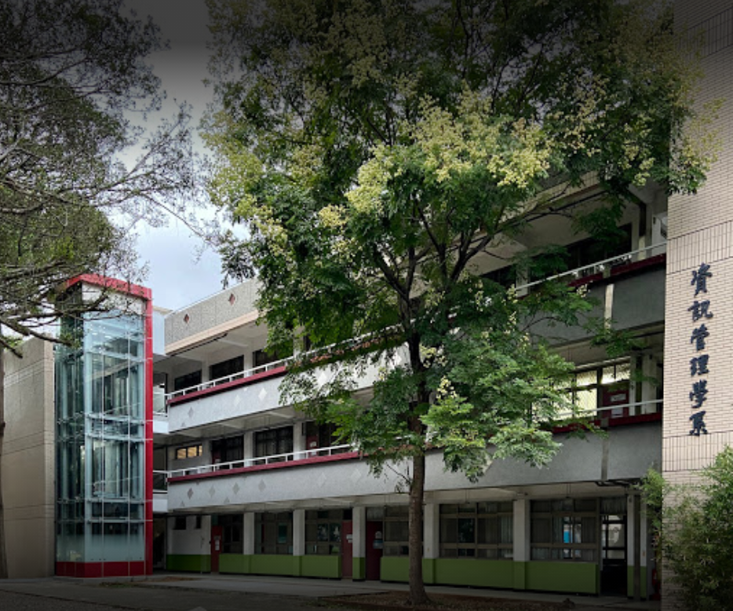

| 資訊工程系 | 資訊管理系 | |
| 科系重點 | 寫不完的程式、交不完的作業 | 做不完的報告、找不完的隊友 |
| 學什麼 | 程式設計、演算法、資料庫、資料結構、 手機程式、人工智慧、系統程式、作業系統、網路程式設計、 計算機網路概論、視窗程式、嵌入式系統、無線網路 | 資訊管理、程式設計、資料庫管理學、經濟學、會計學、生產管理、 人力資源、財務管理、 會計資訊系統、管理資訊系統、決策資源系統、 企業資源規劃、供應鏈管理、電子商務 |
| 人格特質 | 邏輯好、願意動手嘗試，並且冷靜分析錯誤 | 重溝通，與人之間相處良好，願意團隊合作 |
| 怎麼選 | 嘗試自己寫程式，可以先從Java、C++等語言開始，可以明確知道自己適不適合走程式 | |

中原大學商學院資管系
系所特色
教學設計上具備以下的特色：
全人教育：注重師生溝通以及倫理教育，希望培養真正能為社會全體造福之資管人才。 理論與實務兼顧：強調學生實作，在課程中與資管實務界密切配合。 重視區域特性：深刻了解我國企業特有的資管需求，滿足國內企業對資管人才的需要。 強調專業資訊整合：加強與不同專業如商管、醫療、農業等相關系所的資訊化合作。


▌資管系出路有哪些
大家對於資管系都有很廢、很雷的刻板印象，甚至有「讀資管不如讀資工」這種說法，但是資管系出路真的那麼廢嗎？
虛擬整合(Online Merged Offline/Offline Merged Online)的主要以人為核心，並布局全通路，包含以消費者為核心的精準行銷，布局全通路，將線上融合到線下串接，其中以數位、數據、數位金融為主，讓品牌能夠增強營運效能並且創造商機，其中一個幕後推手就是資管系！
Q：資管系出路還是沒有比資工系出路好
資管系學的內容和資工系仍有所差別，以及每個人的志趣與志向不同，並沒有誰比較好，或不好的問題。資管系出路會偏向於物流系統、餐飲點餐系統、旅館訂房系統、人力資源排班、網頁設計，是配合商業管理所寫出來的程式，而資工系偏向的是科技工程領域，以軟體工程師為主
Q：資管系出路有哪些可以做
基本上工程師、網頁設計師等工作都可以做，不侷限在哪個職位或是領域。如果可以的話，當然還是要具備基本的程式Coding概念會比較好，社會新鮮人會比較好找工作，也會比較有工作機會。如果真的不想要當工程師，那你可以考慮往數位金融、行銷企劃、資料庫管理，也是資管系同學的另外一大出路！


- 姓名 廖秀莉
- 職稱 教授兼系主任
- email hsiuliliao@cycu.edu.tw
- 聯絡電話 (03)265-5400
- 研究專長電子商務、網路經營、專案管理、數位學習

推動以「企業e化」為核心之整合型研究群
提供「從做中學」之實做學習環境
全面推展「學習服務、服務學習」之志工精神
加強與業界、資訊政策制定單位、大陸學界之互動
提升系譽、形象與知名度